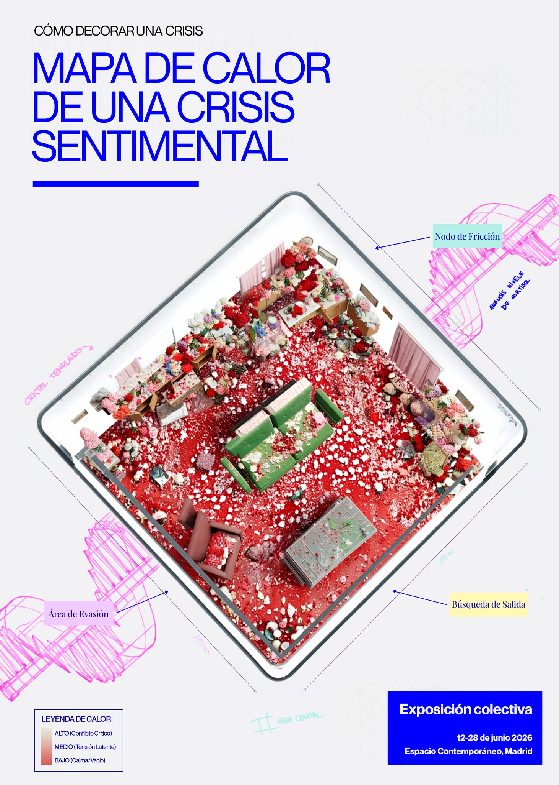
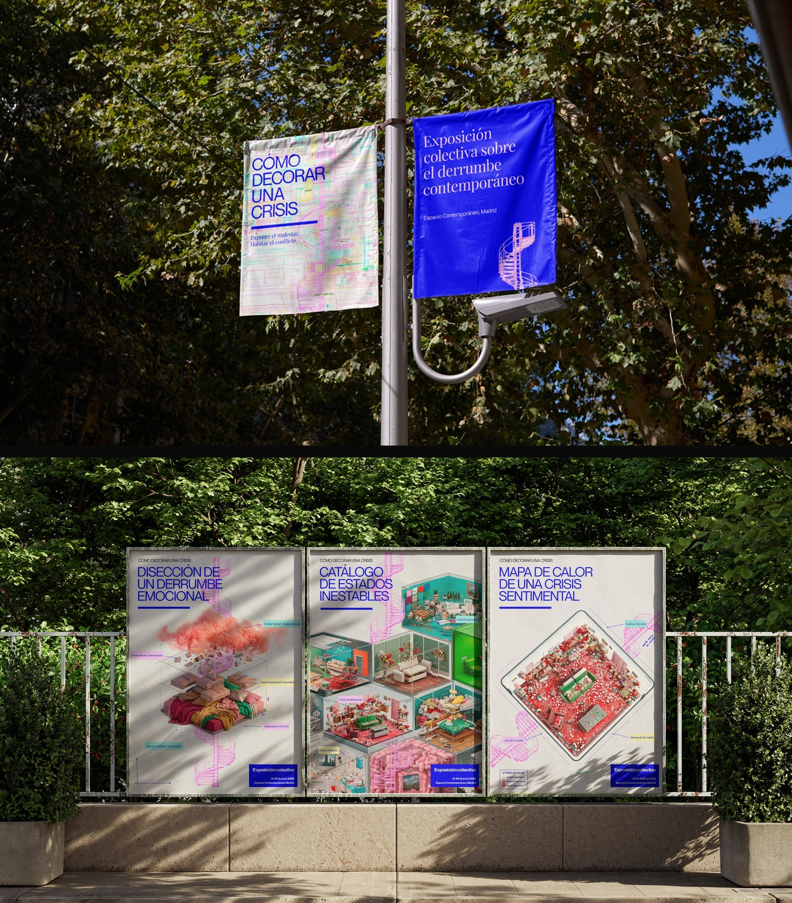
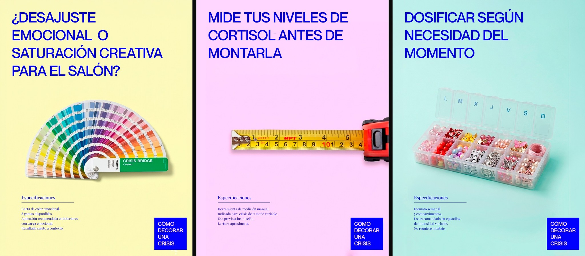
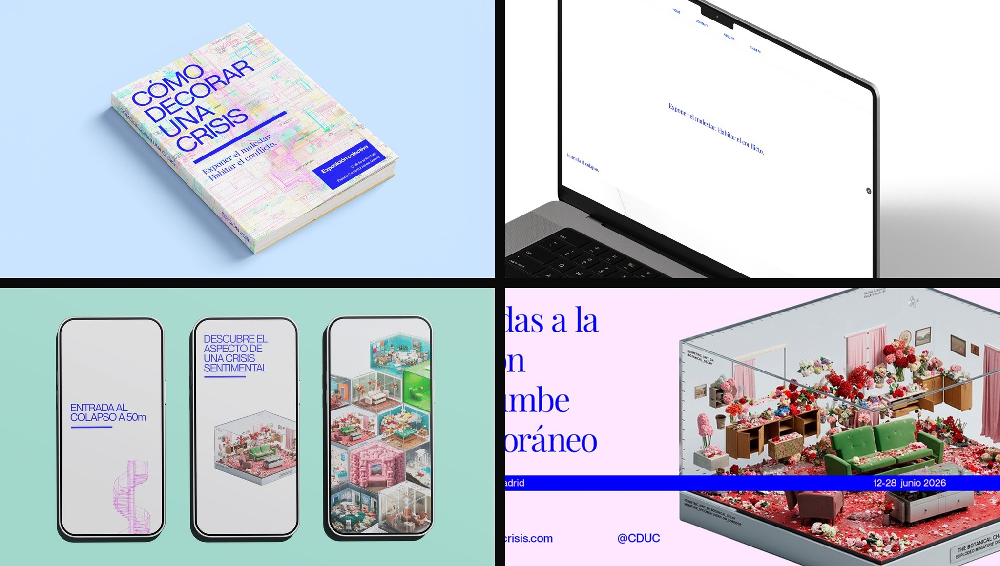

Cómo decorar una crisis
Exponer el malestar. Habitar el conflicto.
Exposición colectiva sobre el derrumbe contemporáneo. Un proyecto que traduce estados emocionales inestables en habitaciones generadas en 3D, catalogadas como si fueran piezas de decoración.


Concepto
"Cómo decorar una crisis" plantea el derrumbe emocional como un espacio doméstico que se puede diseccionar, catalogar y visitar. La muestra reúne tres habitaciones generadas en 3D —una disección de un derrumbe emocional, un catálogo de estados inestables y un mapa de calor de una crisis sentimental— que traducen el malestar al lenguaje de la decoración de interiores. Exponer el malestar. Habitar el conflicto.

Dirección visual
Cada habitación funciona como una ficha de producto: título, especificaciones y una escena en 3D que ilustra el estado emocional al que responde. La serie de comunicación despliega ese mismo lenguaje —tipografía corporativa, fondos de color plano y el sello "Cómo decorar una crisis"— en distintos formatos de anuncio.




Sistema de campaña
El sistema se despliega en distintos soportes: un libro editorial, una web de entradas, contenido para redes y la señalética del evento, manteniendo la misma paleta e iconografía en todos los formatos. La campaña se cierra en la calle, con banderolas de farola y carteles en valla que devuelven la crisis decorada al espacio público.
© MORE PROJECTS
[ PRTFL® — 26 ]
CLASSS
More Projects
More Projects
More Projects
More Projects


Alhaja
Alhaja
Creamos joyas artesanales que no solo se llevan, se sienten. Objetos que se convierten en símbolos de lo que somos y sentimos. Cada pieza es un recuerdo heredado y reinventado.


Etnia Barcelona
Etnia Barcelona
Una campaña para Etnia Barcelona que transforma la personalidad en sabor, utilizando color, humor y metáforas visuales para representar distintos moods del verano.